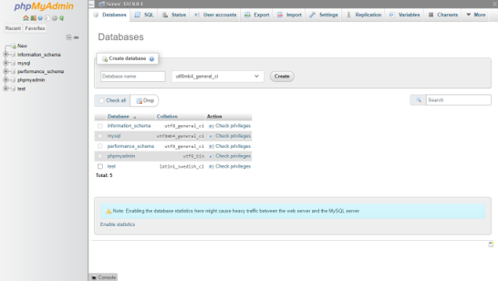
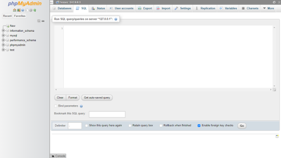
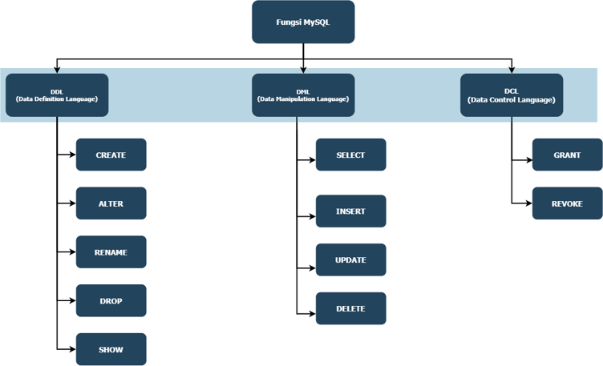

5. Konsep Database
Basis Data (Database)
Secara umum, sekumpulan data terintegrasi dengan ukuran yang sangat besar, dikelola (diolah) dengan cara tertentu yang secara khusus menjelaskan aktifitas - aktifitas dari satu atau beberapa organisasi yang satu sama lain saling terkait.
Tipe Data
Tipe Data dalam ilmu komputer erat kaitannya dengan pemrgoraman dan database. Didalam pemrograman tipe data biasa digunakan untuk mendefinisikan (menetapkan) isi dari sebuah variabel.
Perbedaannya dalam database, tipe data ini digunakan untuk menentukan isi dari sebuah data yang akan disimpan.
Tipe data ini berbeda-beda tergantung dari bahasa pemgrograman atau jenis database yang kita gunakan.
Tipe data ini akan dikelompokan menjadi 5 bagian utama. Pada tipe data dalam MySQL dibagi menjadi 3, yaitu :
- Tipe Data Numerik,
- Tipe Data String, dan
- Tipe Data Date/Time.
Tipe Data Numerik
Adalah tipe data numerik untuk mengukur nilai secara matematik, misalnya mata uang, angka desimal, dll.
| No | Tipe | Keterangan | Penerapan |
|---|---|---|---|
| 1. | INTEGER(size) | Tipe data yang berisi kumpulan bilangan bulat, baik dalam bentuk bilangan positif maupun negatif | Angka secara umum |
| 2. | FLOAT(size) | Bilangan desimal dengan presisi tunggal (single-precision) | π, desimal dengan fokus pada nilai input contoh : 3.14159265359 |
| 3. | DOUBLE(size, d) | Bilangan desimal dengan presisi ganda (double-precision). Jumlah total digit ditentukan oleh size, jumlah digit setelah titik decimal ditentukan oleh d | Uang, dengan fokus jumlah desimal 2 angka di belakang koma contoh: 2.500,00 |
Tipe Data String
Merupakan suatu teks dengan panjang variabel dimana setiap huruf dapat memiliki ukuran lebih kecil atau besar daripada satuan lainnya. Misalkan nama depan, nama belakang, alamat, nomor telepon, website, serta informasi lainnya.
| No | Tipe | Keterangan | Penerapan |
|---|---|---|---|
| 1. | CHAR(size) | Menyatakan deretan karakter (String) yang lebarnya tetap. Size : 0 hingga 255 karakter |
Jenis_kelamin (L/P) contoh : L |
| 2. | VARCHAR(size) | Menyatakan data String yang lebarnya bervariasi. Size : 0 hingga 255 karakter |
Nama pengguna contoh : Amanda |
| 3. | TEXT(size, d) | Menampung string Panjang yang lebarnya tidak dapat diprediksi. |
Tipe Data Date
Menyimpan tanggal dan waktu dalam format tertentu seperti tahun, bulan, dan hari, jam, menit, dan detik. Tipe data date bisa digunakan untuk mengatur kronologis dari peristiwa.
| No | Tipe | Keterangan | Penerapan |
|---|---|---|---|
| 1. | DATE(size) | Digunakan dengan tanggal dengan format “YYYY-MM-DD” | 2004-09-21 |
| 2. | TIME(size) | Digunakan untuk waktu dengan format “hh:mm:ss” | 12:33:12 |
| 3. | DATETIME(size, d) | Digunakan untuk tanggal dan waktu dengan format “YYYY-MM-DD hh:mm:ss” | 2012-11-29 11:55:23 |
Constraint / Kekangan Nilai
Constraint atau kekangan nilai digunakan untuk menentukan aturan yang mengizinkan atau membatasi nilai yang akan dimasukkan dalam tabel. Kekangan Nilai Menyediakan Metode Yang sesuai untuk memastikan akurasi dan integritas data di dalam table.
Contoh constraint, yaitu :
- Membuat Nilai Tidak Kosong(NOT NULL)
- Membuat Nilai Unik(UNIQUE)
- Membuat kenaikan nilai secara otomatis(AUTO INCREMENT)
- Membuat Kunci tamu(FOREIGN KEY)
- Menggunakan Alias table dan query antartable (INNER JOIN)
Constraint NOT NULL
Constraint NOT NULL mengatur agar data tertentu harus terisi atau tidak kosong. Ada kolom tertentu dari suatu table harus terisi dengan nilai valid. Contoh case :
CREATE TABLE `mahasiswa`(
`nama` VARCHAR(50), NOT NULL,
`nim` VARCHAR(30) NOT NULL
)Untuk case di atas maka nama dan nim yang diinputkan ke dalam database tidak boleh kosong.
Constraint UNIQUE
Constraint UNIQUE ditujukan untuk memastikan bahwa nilai dalam kolom unik, artinya kolom tidak dapat menyimpan nilai duplikat. Contoh case:
CREATE TABLE `mahasiswa`(
`nama` VARCHAR(50) NOT NULL,
`nim` VARCHAR(50) NOT NULL UNIQUE
)Untuk case di atas nama mahasiswa bisa saja sama, tapi NIM mahasiswa tidak akan pernah sama maka diberi Constraint UNIQUE
Constraint AUTO INCREMENT
Auto increment digunakan untuk menaikkan nilai secara otomatis pada field numerik. Ada beberapa hal yang harus diperhatikan dalam menggunakan auto increment:
- Hanya Dapat Digunakan Pada field numerik
- Field harus bersifat primary key atau unik
- Field tidak boleh bersifat null
- Dalam Satu Tabel hanya ada satu field yang menggunakan auto increment
CREATE TABLE `mahasiswa`(
`id` VARCHAR(11) NOT NULL AUTO_INCREMENT,
`nama` VARCHAR(50) NOT NULL,
`nim` VARCHAR(50) NOT NULL UNIQUE
)Pembuatan Database
Dalam pembuatan database dapat dibuat dalam 2 cara, yaitu menggunakan platform dan menggunakan scripting


Perintah MySQL (DDL, DML, DCL)
Secara umum perintah fungsi MySQL dibagi menjadi 3, yaitu :
- DDL (Data Definition Language),
- DML(Data Manipulation), dan
- DCL (Data Control Language).
Pada modul ini akan dibatasi pada DDL dan DML untuk praktek.

Data Definition Language (DDL)
Data Definition Language (DDL) adalah bagian dari SQL (Structured Query Language) yang digunakan untuk mendefinisikan struktur database dan objeknya, seperti tabel, tampilan, indeks, dan prosedur dalam sebuah database. Pernyataan DDL digunakan untuk membuat, mengubah, dan menghapus objek database, termasuk tabel, tampilan, indeks, dan prosedur tersimpan. Beberapa pernyataan DDL yang paling umum meliputi:
CREATE
Pernyataan ini membuat objek database baru, seperti tabel, tampilan, atau indeks. Misalnya, pernyataan SQL berikut membuat tabel yang disebut “pelanggan”:
CREATE TABLE pelanggan ( id INT PRIMARY KEY, name VARCHAR(255), address VARCHAR(255));ALTER
Pernyataan ini digunakan untuk memodifikasi objek database yang sudah ada. Misalnya, pernyataan SQL berikut menambahkan kolom baru bernama ” email ” ke tabel ” customers “:
pelanggan ALTER TABLE ADD email VARCHAR(255);DROP
Pernyataan ini digunakan untuk menghapus objek database yang sudah ada. Misalnya, pernyataan SQL berikut menghapus tabel “pelanggan”:
pelanggan DROP TABLE;
TRUNCATE
Pernyataan ini digunakan untuk menghapus semua baris dalam tabel, tetapi tidak seperti pernyataan DROP, pernyataan ini mempertahankan struktur dan indeks tabel.
RENAME
Pernyataan ini digunakan untuk mengganti nama objek database yang sudah ada. Misalnya, pernyataan SQL berikut mengganti nama tabel “pelanggan” menjadi “klien”:
RENAME TABLE pelanggan TO klien;Penting untuk dicatat bahwa pernyataan DDL dieksekusi segera dan bersifat permanen, artinya setelah objek dibuat, diubah, atau dihapus, perubahan tidak dapat diurungkan. Oleh karena itu, sangat penting untuk berhati-hati dan memastikan bahwa Anda memiliki cadangan basis data sebelum menjalankan pernyataan DDL apa pun. Selain itu, pernyataan DDL biasanya dijalankan oleh administrator database atau pengembang dengan hak istimewa dan izin yang sesuai untuk mengubah struktur database.
SHOW
Perintah DDL ini digunakan untuk menampilkan daftar database atau tabel yang ada.
Penerapan :
SHOW TABLES;Create Database Mahasiswa dan Table identitas
CREATE DATABASE mahasiswa; CREATE TABLE identitas (`Nama` VARCHAR(250) NOT NULL PRIMARY KEY);Alter Table
ALTER TABLE identitas ADD NIM VARCHAR(15) UNIQUERename Table
RENAME TABLE identitas TO id_mahasiswaShow Table
SHOW TABLES;Drop Table
DROP TABLE id_mahasiswaCoba kreasikan Database kalian dengan perintah DDL!
Buatlah Databasekuliahberisi 2 table yaituid_dosendanid_mahasiswa
Tableid_dosenberisi kolom : nama, NIDN, Jabatan
Tableid_mahasiswaberisi kolom : nama, NIM, Prodi
Data Manipulation Language (DML)
Data Manipulation Language (DML) adalah bagian dari SQL (Structured Query Language) yang digunakan untuk memanipulasi data dalam database. Sehingga pernyataan DML ini dapat digunakan ketika database dan tabel telah dibuat. Pernyataan DML digunakan untuk menyisipkan, memperbarui, dan menghapus data dalam database. Beberapa pernyataan DML yang paling umum meliputi:
INSERT
Pernyataan ini digunakan untuk memasukkan data baru ke dalam tabel. Sebagai ilustrasi, pernyataan SQL berikut menyisipkan baris baru ke dalam tabel “pelanggan”:
INSERT INTO pelanggan (id, nama, alamat) VALUES (1, 'John Smith,' '123 Main St');SELECT
Pernyataan ini digunakan untuk mengambil data dari satu atau lebih tabel dalam database. Sebagai contoh, kueri SQL berikut mengambil semua rekaman dari tabel “pelanggan”:
SELECT * FROM pelanggan;UPDATE
Pernyataan ini digunakan untuk memodifikasi data yang ada dalam sebuah tabel. Misalnya, pernyataan SQL berikut memperbarui alamat pelanggan dengan ID 1 di tabel “pelanggan”:
UPDATE pelanggan SET address = '456 Park Ave' WHERE id = 1;DELETE
Pernyataan ini digunakan untuk menghapus data dari tabel. Misalnya, pernyataan SQL berikut menghapus pelanggan dengan ID 1 dari tabel “pelanggan”:
DELETE FROM pelanggan WHERE id = 1;Gunakan Database yang telah kalian kerjakan pada Latihan DDL sebelumnya!
Insert Data
INSERT INTO id_mahasiswa VALUES ('Amanda', 'A11.2020.54321',);Select Data
SELECT Nama, NIM FROM id_mahasiswa;Update Data
UPDATE id_mahasiswa SET `Prodi`='Ilmu Komunikasi' WHERE `Prodi`='';Delete Data
DELETE FROM id_mahasiswa WHERE `NIM`='A11.2020.54321';Kreasikan database kalian dengan perintah dari DDL dan DML !